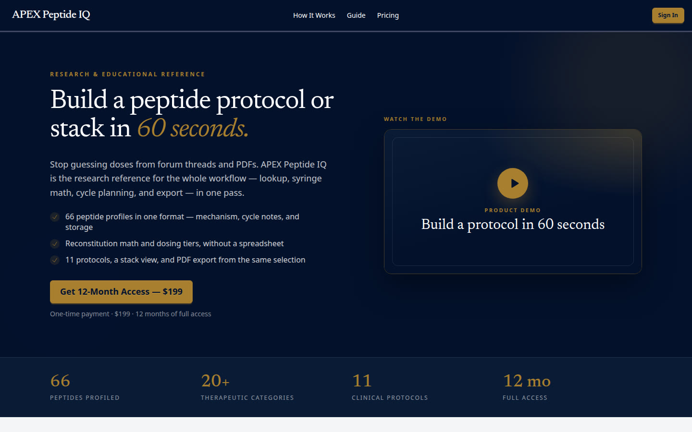
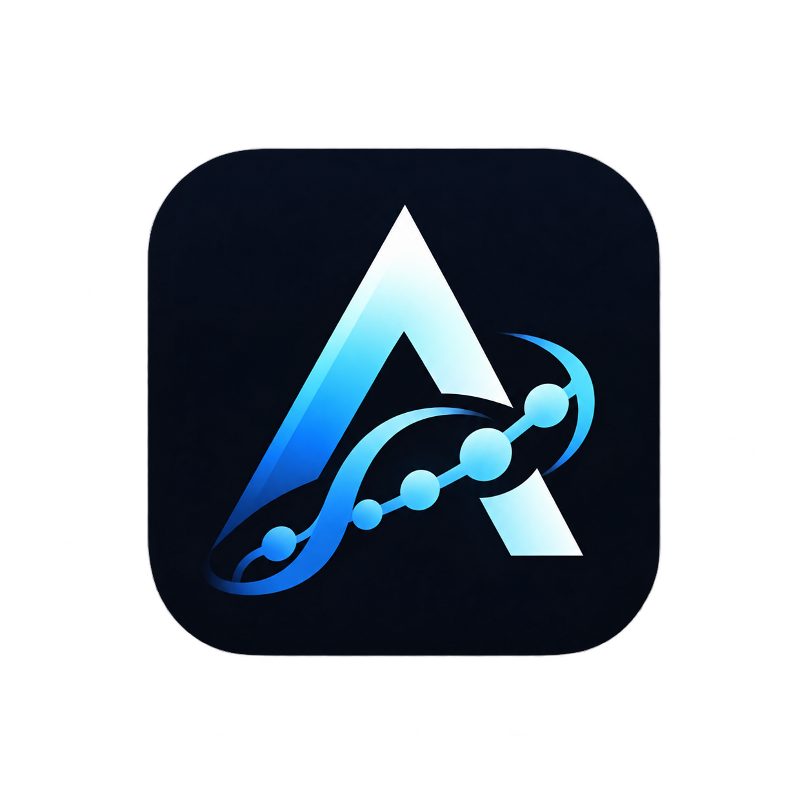
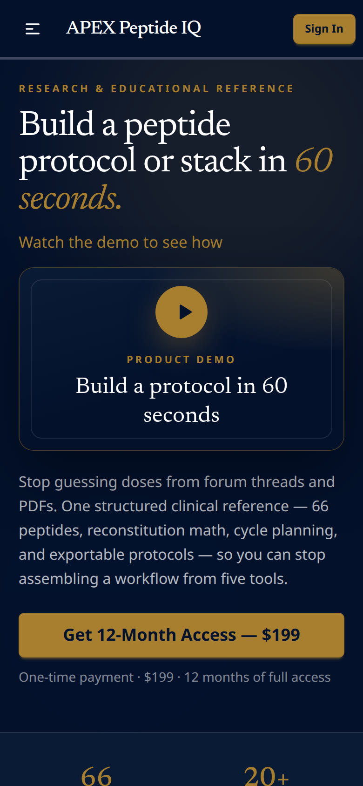

Selected Work / Case Study № 03
research reference · digital product
APEX Peptide IQ · apexpeptideiq.com
Build a peptide protocol or stack in 60 seconds.
Stop guessing doses from forum threads and PDFs. APEX Peptide IQ is the research reference for the whole workflow — lookup, syringe math, cycle planning, and export — in one pass.

The Brief
From scattered notes to one clinical instrument
If you work with peptides, you already know the ritual: a folder of PDFs, a notes app of half-saved doses, a reconstitution spreadsheet, and a forum thread arguing about units. Every protocol starts with tab-switching.
Line on the live homepageGet 12-Month Access — $199. One-time payment · $199 · 12 months of full access.
02 — Identity
Tokens from the stylesheet
Swatches are the live data-theme=apex tokens. The file icon.png on the live site is a blue mark; it is not recolored to the gold accent token.
Color
Primary
--color-primary#03112b
Secondary
--color-secondary#0a1b36
Accent
--color-accent#a87f2e
Surface
--color-base-100#ffffff
Raised
--color-base-200#f4f5f7
Text
--color-base-content#1a1a1a
Type
Aa Bb
ABCDEFGHIJKLMNOPQRSTUVWXYZ · abcdefghijklmnopqrstuvwxyz · 0123456789
Newsreader · --font-display on the live stylesheet
Aa Bb
ABCDEFGHIJKLMNOPQRSTUVWXYZ · abcdefghijklmnopqrstuvwxyz · 0123456789
Inter · --font-inter on the live stylesheet. JetBrains Mono is also named.
Logo

Live file icon.png, 1254×1254. Shown smaller than the file. No separate wordmark file was found.

Screenshot pending — content needed
A second mobile screen was not in the prototype files or this repo. The Hive study shows two phones. This page has the one homepage capture stored for the work grid.
03 — Mobile
Homepage on a phone
The phone frame is the homepage screenshot stored with this work page.
Results pending — content needed
No load time or before-and-after figure is in a project guide or scope file. Numbers that appear above are lines printed on the live homepage, not a measured outcome of this page. The homepage also labels 66 peptides profiled, 20+ therapeutic categories, 11 clinical protocols, and 12 mo full access. Those labels are not repeated here as results.
04 — In Detail
Lines from the live homepage
Screenshot pending — content needed
Section crops were not in the source files. The three notes below are homepage lines, not separate screenshots.
Homepage
Profiles
66 peptide profiles in one format — mechanism, cycle notes, and storage.
Homepage
Math
Reconstitution math and dosing tiers, without a spreadsheet.
Homepage
Export
11 protocols, a stack view, and PDF export from the same selection.
Quote pending — content needed
No named quote or testimonial was copied. Homepage review counts, where the site prints them, stay in the brief as the site's own line.
05 — The long scroll
Homepage viewport
The image is the homepage capture already in this repo. It is the top of the page, not a stitched full-page scroll.
Screenshot pending — content needed
A full-page scroll capture is not in the source files.